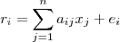
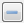

Mixture Model
The
Mixture
Model is
a component that implements a raster
decomposition
using the mixture model
strategy. The spatial resolution of remote sensing satellites, in
general, allows that a single pixel contains more than a target (for
example vegetation + shadow + soil). The mixture model algorithms allow
to decompose the raster into fraction images, where the value of the
resultant pixels indicate the fraction of each target inside the pixel.
The main
information needed to execute a mixture model are:
- A map of pure endmembers,
which are pixel values where the user knows the exact proportion of a
component.
- Sensor information for each
band, if available
The
available methods in TerraLib
are:
- Linear:
It is calculated
by the following equation:

- ri
is the pixel value at band i,
- aij
is the known value of the
component j
at band i,
- xj
is the proportion
of component j,
- ei
is the estimation error for band i.
- PCA:
The component matrix
is transformed using Principal Component Analysis, and the fraction of
each component is obtained by using the proper number of eigenvectors.
It
is
accessible through:
Raster
Processing > Mixture
Model...
(list of all
raster layers will be available)
This
wizard consists of the
following steps:
Wizard Page 1 - Selection
of the layer with the desired raster (Layer Search)
- On the List
of Layers select the raster layer to apply the Mixture
Model.
- Optionally use Filter
By Name field
giving part of the layer name to help find the layer in the list.
- Press Next
to go to next step or Cancel to close the
dialog.
Wizard Page 2 - Mixture Model interface
- Type - Select the Type
of mixture
model to be used and set specific
parameters (the parameters will vary depending on the selected contrast
type).
- Options
- Normalize output:
indicate that output raster will be normalized, by default [0, 255].
- Create error images:
indicate that output raster will include the error
bands.
- Raster Bands
- Select the input Bands and
the Sensor information for each band.
- Selected Components List: it lists the Names and the Values (one for each band) of the components acquired
over the image (for example samples of soil, water and shadow). The
number of components (samples) and bands must be the same.
- Use
 tool to enable the acquisition of components (samples) through the interface Raster
Navigator. This interface offers several tools (such
as zoom, color composition) to help on collecting good samples.
tool to enable the acquisition of components (samples) through the interface Raster
Navigator. This interface offers several tools (such
as zoom, color composition) to help on collecting good samples.
- Use tool to and click over a "pure" sample over the image to acquire a component. The components will be listed with a default name.
- To change the name, double click over the cell (Component<x>) to enable the name edition and change it, pressing enter after all.
- Use  tool to remove undesired samples from the list.
- Press Next
to go to next step, Back to return to the previous wizard or Cancel to close the
dialog.
- Raster Info
- First press
 and inform the folder where the resulting
file will be saved.
and inform the folder where the resulting
file will be saved.
- Name - inform
the raster name.
- Extra
Parameters - if there are some, see the details on how to
inform then here.
- Press Finish
to save the resulting raster or Back
to go to the previous wizard page.
Hint: The Mixture Model result is added to
the TerraView project as a new layer and the default style used is color
composition. Use the Style Explorer to select just one band in monochromatic to check each component (soil, water, shadow).